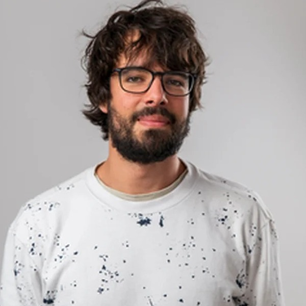
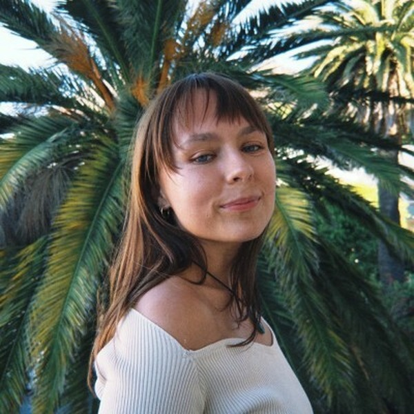
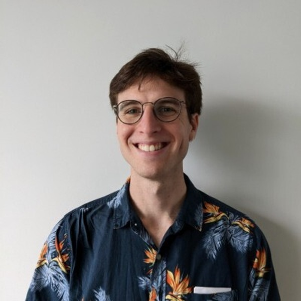
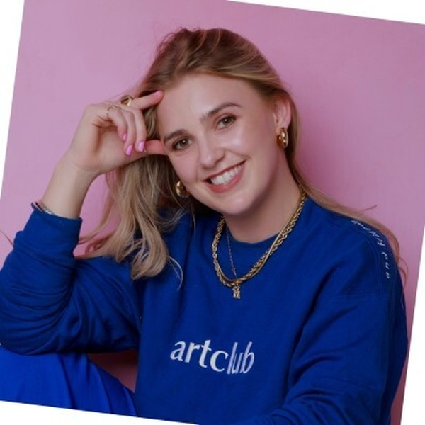

Who we are.
We are a tight-knit team with a strong culture. We balance the seriousness of our mission with light-heartedness, mindfulness, and care.

Leo Hyams
Co-Founder, Executive DirectorLeo has grown CISAI from a local group of part-time researchers into a fully-funded institute working with globally relevant institutions and researchers. His role includes fundraising, culture, strategy, and managing stakeholder relationships, finances, and the team. He is also passionate about design: he made this website and the associated visual assets :)

Tegan Green
Operations DirectorTegan is a strong generalist who uses her significant project management experience to design and run exceptional programs at CISAI, such as the Cooperative AI Research Fellowship. She has a particular focus on improving the end-to-end experience of individuals that interact with the hub, drawing on her experience as a UX designer. She runs independent experiments in cooperative AI, and is interested in the implications of digital minds and how to promote human agency.

Benjamin Sturgeon
Co-Founder, Strategic DirectorBen co-founded AI Safety South Africa (the organisation that would become CISAI) with Leo in 2024. He is an AI safety researcher who recently completed the MATS fellowship, working with researchers from the UK AI Security Institute. He is currently on a research fellowship associated with the Centre for Long-Term Risk.

Jaco Du Toit
Evaluations LeadJaco is a machine learning engineer and researcher, focused on AI capability evaluations. He has worked with the CISAI team to develop many evaluations for the UK AI Security Institute. He is a lead author of AI safety research published at NeurIPS and was a lead researcher on CISAI's work collaborating with the UK AI Security Institute, where he worked closely with their Science of Evaluations team.

Alexa Blagus
Workspace ManagerAlexa is a marketing and operations professional who coordinates projects, manages timelines, and helps create strong customer and community experiences. As Workspace Manager, she keeps CISAI’s coworking space running smoothly, supporting members and visitors while managing suppliers, supplies, catering, events, and improvements to the space. She is also the founder of CAYA Thrift, a sustainable fashion brand.

Josh Stein
Community ManagerJosh is a community manager who helps build a welcoming, inclusive, and engaged CISAI community. He brings a background in software engineering and AI safety research, and is interested in artificial intelligence and interpretability. He holds an MSc in Biomedical Computing from the Technical University of Munich and a BSc in Electrical and Computer Engineering from the University of Cape Town.

Isabella Hamilton-Russell
Program ManagerIsabella is a program manager focused on delivering CISAI’s fellowships, residencies, university groups, and community programs. She brings a background in strategy, partnerships, and social impact, and is passionate about building the human capabilities needed to navigate an era of AI.

Karabo Mokoena
Governance AffiliateKarabo works with CISAI on policy matters relating to AI governance. She is a candidate attorney at Michaelsons and has an LLM in Technology Law and Innovation from the University of Groningen. She has advised public data protection authorities, supported regulators in shaping autonomous vehicle frameworks, guided startups entering the EU AI market, and helped enterprises strengthen global trust and cybersecurity practices.

Claude Formanek
Research AffiliateClaude's research focus is on understanding the unique risks pertaining to multi-agent AI systems. He holds a PhD from the University of Cape Town, supported by a Cooperative AI Foundation PhD Fellowship, specialising in Offline Multi-Agent Reinforcement Learning. He has published in several top venues, including NeurIPS, ICLR, and ICML, and brings five years of industry experience as a Senior Machine Learning Research Engineer at InstaDeep.